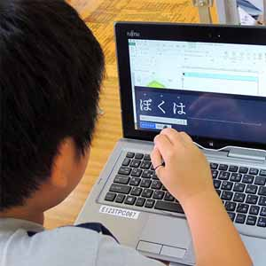
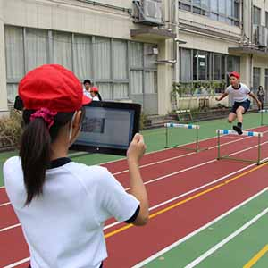
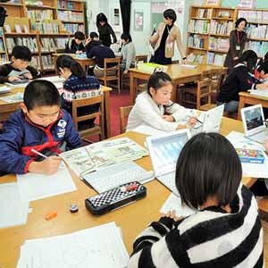
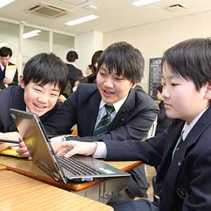

日本初、区内全ての小中学校に
タブレットPCを導入。
- 学習スタイルを変革、21世紀型スキル習得を支援する -
CLIENT 荒川区教育委員会
「21世紀型スキル」を習得するための、未来志向の学習環境。国を挙げての一大プロジェクトが進行するなか、東京都荒川区で、日本初の取り組みが行われた。区内全ての小中学校を対象にした「１人１台」のタブレットPC導入である。このプロジェクトの実施にあたり白羽の矢が立ったのが、内田洋行だ。
-
SE担当 プロジェクトリーダー西山直哉
-
ＭＰＳ事業部 ネットワークテクニカルセンター 1999年入社 理工学部卒
-
プロジェクトリーダーとして14チームを 擁する大規模プロジェクトを指揮した。
-
営業担当磯部正守
-
教育ICT事業部 東京営業部
1997年入社 工学部卒
-
自治体向け基幹システムの営業からキャリアを スタート。2010年から教育部門に。
FLOW プロジェクトの流れ
-
企画検討
-
モデル校４校で運用開始
-
モデル校外30校企画検討
-
プロポーザル・受注
-
設計・構築
-
運用
EPISODE 1: 「120%」の提案書
他の自治体に先行し、全普通教育への電子黒板を導入していた荒川区。かねてより、教育のICT化に積極的な自治体として知られていた。「将来を生きる子どもたちに、グローバル社会で求められる21世紀型スキルを習得してもらう」。荒川区長のビジョンに共鳴し、電子黒板の整備を行うなど、過去10年以上にわたり教育環境整備をサポートしていたのが、内田洋行である。誰よりも、荒川区の環境を熟知していた。
とはいえ、区内の全小中学校に１人１台のタブレットPCを配布するという一大プロジェクトだ。プロジェクトリーダーの西山直哉は、発足当時をこう振り返る。「もし受注できたら、内田洋行史上、最大の契約案件になる。他の自治体への横展開も当然のように期待されました。プレッシャーは大変なものでしたが、『絶対受注できる』という根拠のない自信があったことを覚えています」（西山）。
-
その自信はしかし、間もなく「根拠のある」自信に変わる。2013年12月に区から仕様が公示され、翌1月末には提案書を提出しなければならないというタイトなスケジュールだった。それを乗り切るため、若いプロジェクトメンバーたちが奮起した。
若手メンバーを中心に、全員がアイデアを持ち寄り、提案書を作り上げた。「そうした提案が採用されたことが、プロジェクトを通じて最大の達成感だったかもしれません」。そう語るのは営業担当の礒部正守だ。「今回はトップダウンでプロジェクトチームが発足したわけではありません。西山と私が部署を越えて声をかけ、集めたメンバーなんです。内田洋行には、さまざまな強みを持った人間がいる。これをリソースとして使わない手はない、と思いました」（礒部）。
-
「結果、素晴らしい提案書に仕上がりました」と西山が続ける。「それまでの仕事は、自分のイメージした内容の80%も実現できれば大成功でした。しかし今回は、若手からも意見を募ったおかげで、120％の手応えがあった。それぐらい、周囲の協力がすごかった。このメンバーなら絶対大丈夫！ そんな自信が湧いてきました」（西山）。発足当初は苦難の連続だったという。仕様外の対応について、繰り返し議論を戦わせもした。果たして、見事に内田洋行が受注を決めた。
EPISODE 2: 「授業を決して止めない」という挑戦
-
生徒たちに「１人１台」のタブレットを配るということは、１つの教室あたり約40台のタブレットが同時に稼働するということを意味する。本プロジェクト最大の技術的な壁は、ここにあった。「最初に導入を始めたモデル校では、『授業中に無線LANが切れる』という事態がしばしば起こりました。授業におけるタブレットの使い方は、ネットワークに大きな負担をかけるものでしたから」（西山）。
授業を止めない。この単純きわまりない課題が、越えがたい難問だったのである。「そもそも日本初のプロジェクトですから、プロトタイプも存在しません。1 to 1のタブレット運用それ自体が、かなりチャレンジングなことでした」（礒部）。
-
技術面では、無線LANのアクセスポイントの性能向上、タブレット側の受信機能の性能向上、またタブレット上で動くアプリケーションにもネットワークに負荷の掛からないよう調整を施すことで対処した。だが、どれだけ技術的な改善を積み重ねても、ネットワークトラブルをゼロにすることは、原理的に困難だ。
「トラブルをゼロにすることは難しい。でも、いざ使おうと思ったときにタブレットが動かないのでは、先生もICTを使うのが怖くなってしまいます。ICTはあくまで先生がやりたい授業を実現させるためのツールです。先生が使いたいと思うポイントで使えないと意味がないし、授業の邪魔をしてはいけない。『授業を止めないで済む仕組み』を現場目線で作っていく必要がありました」（西山）。
EPISODE 3: 区内34校にICT支援員が常駐、運用支援に尽力
-
実は西山は、プロジェクト開始前からICT化を指導する者の手による「運用支援」こそが、大きなポイントになると見越していた。荒川区の先進的な授業スタイルを実現するには、システム導入後のサポートが不可欠だと考えていたのである。もっとも、ネットワークやシステムを構築することだけがICT支援ではない。ハード、ソフト、人材とあらゆる面からクライアントに最適なICT導入を提案できることが、内田洋行の強みと言える。
本プロジェクトにおいては、「ICT支援員」が重要な役割を担った。荒川区内34校に１人ずつICT支援員を派遣することになったのである。各校に１年間常駐し、授業におけるタブレットPCの効果的な使い方を提案したり、トラブルシューティングをしたりと、陰ひなたから現場の教員を支える存在である。
-
しかし、問題があった。ICT支援員のマネジメントだ。現場の教員に対し何を提案し、どうアドバイスするのか標準化する必要がある。「正直、彼らをマネジメントできる自信はまったくありませんでした」と西山は苦笑する。「最初のモデル校４校であれば表計算ソフト上で管理できました。しかし34校になると無理。結局、専用の管理ツールを作ることになりました」（西山）。
この管理ツールでは、どの時間にどのクラスでどんな授業をして、どんなICT機器を用い、児童・生徒・教員の様子はどうであったか、全てをデータとして落とし込み、ビジュアル化している。これを荒川区教育委員会と社内にフィードバック、タブレットのさらなる効果的な使い方が検討できるようになった。
加えて、各校のICT支援員には、授業の実践事例を週一回提出し、共有するよう求めている。 「そうすることで、『この学校はこれぐらい事例を提出している』と、数字として見えてしまいます。見える化することで、各校が緊張感を持ちながら切磋琢磨しあえるような仕組みにしたのです」（西山）。「そこで集まった事例集は、区にとっての大きな財産になるはずです。将来的にICT支援員がいなくなっても流通して、各校の先生に参考にしてもらえるように、とも考えてのことでした」（礒部）。
巧みにデザインされたハード、ソフト、人材配置、仕組み。荒川区では、今日もタブレットを手にした生徒たちが新たな学習スタイルで学んでいる。
-

国語の授業。タッチペンで入力した文字が表示される
-

水泳のフォームのチェックもスムーズに行える
-

図書館でもタブレットが活用されている
-

タブレットで生徒同士のコミュニケーションも活発に
FUTURE 今後の展望〜終わらない挑戦
-
西山
-
いま、全国の自治体が教育のICT化に関心を持っています。みなさん「タブレットを導入したらこんなことができる」ということもよくご存じです。しかし「導入してみないとわからないこと」もたくさんあります。例えば、先生の「教えたい」という気持ちや、子どもの「学びたい」気持ちの高まりも、現場には表れています。それをもっとわかりやすい形にして、費用対効果とともに他案件でも訴求できるようにしたいと考えています。
-
磯部
-
今回の荒川区のプロジェクトは、間違いなく内田洋行にとっても大きな財産となるでしょう。この規模を経験できれば、さらに大きな規模のプロジェクトも提案できるはずです。事実、全国の自治体から500〜600人という規模の視察団がいらっしゃっています。人を動かし、人を巻き込み、巻き込まれた人に満足してもらえるような横展開をしていきたいですね。